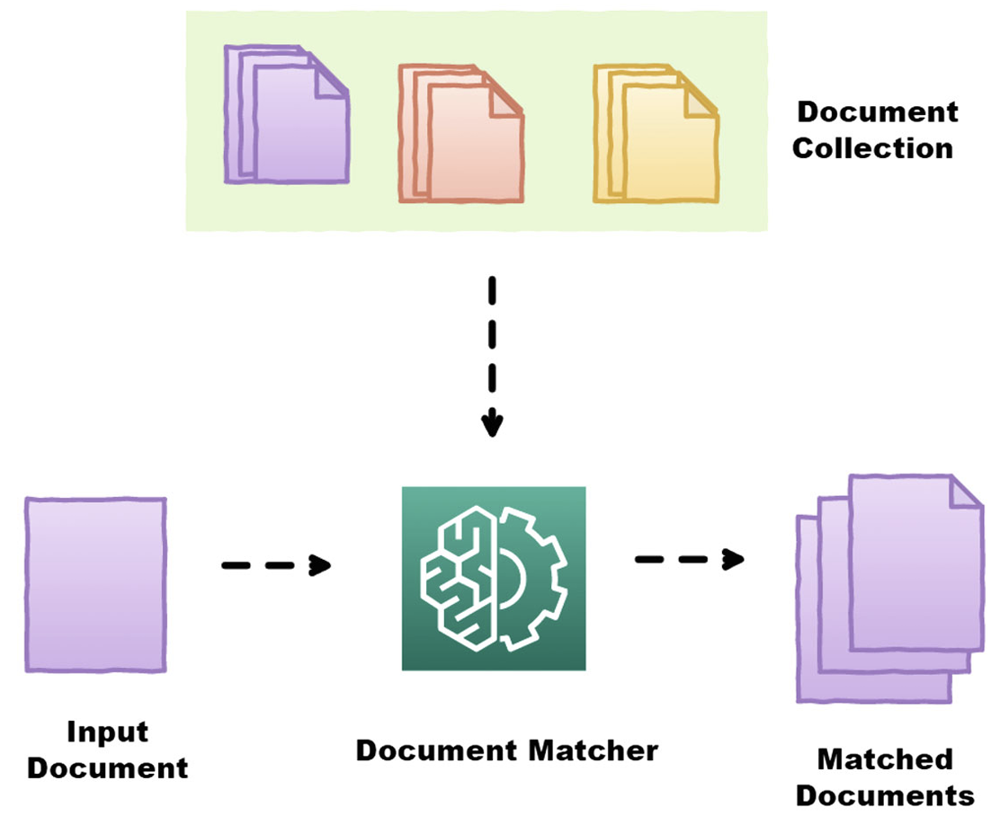
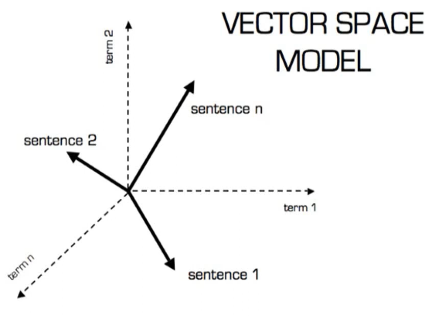
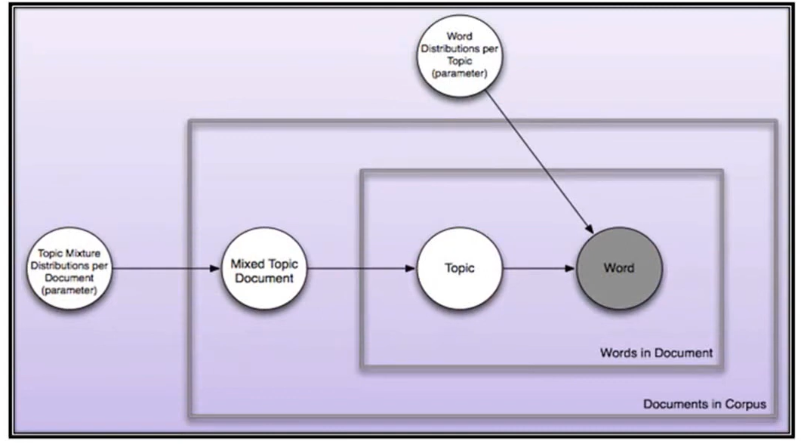
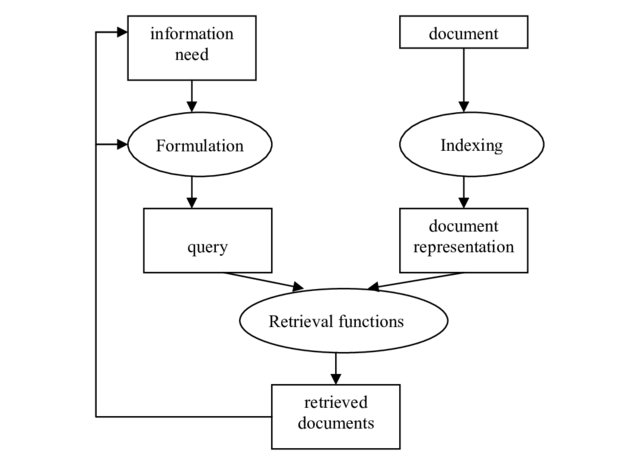
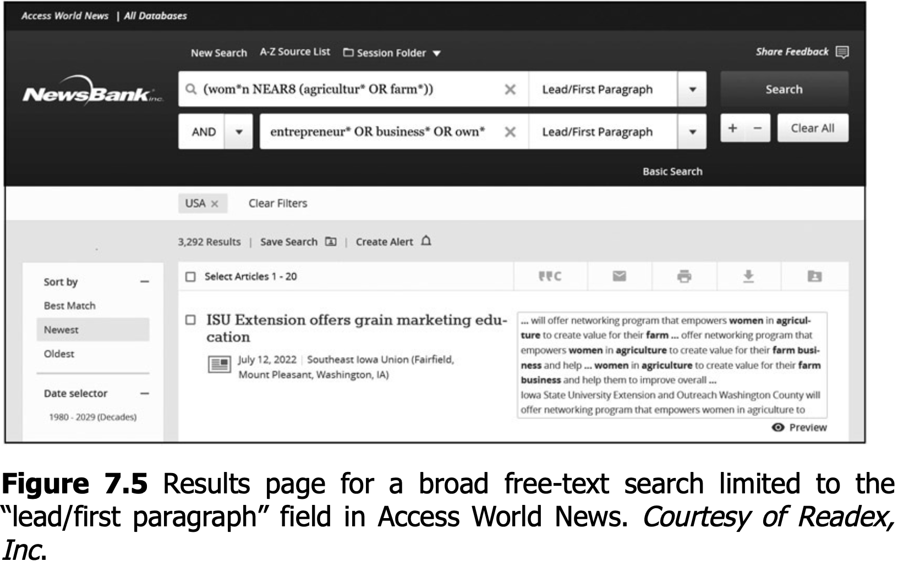
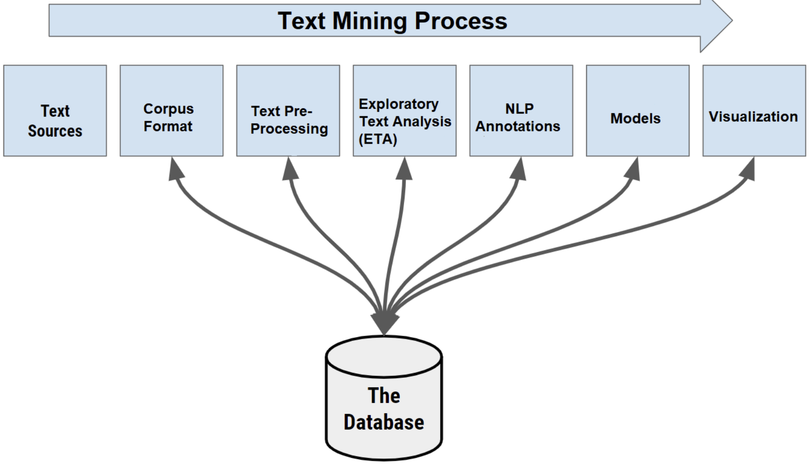
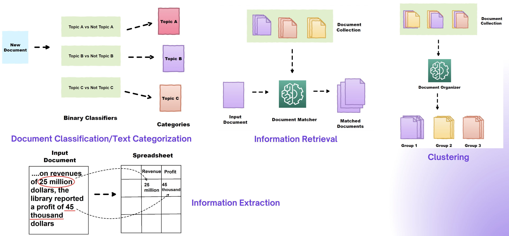
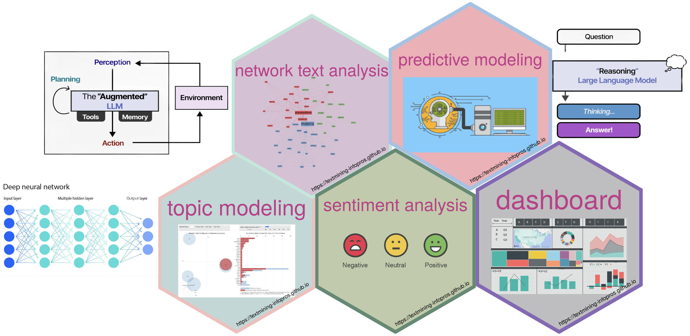

Text in Context: Basic Concepts
LIS 4/5693: Information Retrieval and Text Mining
Introduction
Information Retrieval (IR) is about finding the right documents
Natural Language Processing (NLP) is about understanding language
Text Mining is about discovering patterns and knowledge from large collections of text
Exponential Growth of Data
Data and information generation in every discipline in the universe of knowledge has seen staggering growth
Storing, managing, querying, & retrieval of huge amount of data & information needs sophisticated procedures & advanced technologies
Nowadays, information collection is web-based and online which is vast and growing at an exponential rate


From Data to Knowledge
For several years advances in Knowledge Discovery in Databases (KDD) have been undertaken to manage the information in an efficient manner
Data mining is a part of the KDD process which identifies the hidden patterns in large information repositories
It involves several information extraction techniques such as regression models, association rules, Bayesian methods, decision trees, neural networks, etc.
Data can be textual or non-textual in nature
Textual data are generated from various digital sources such as journals, newspapers, archives, social networks, blogs, forums, etc.
Information Retrieval
Definition
A process in which sets of records or documents are searched to find items which may help to satisfy an information need
Information Retrieval
Information Retrieval includes:
- Search engines have been developed based on the concepts, principles, and techniques developed by IR
Brief History of Information Retrieval
- System for the Mechanical Analysis and Retrieval of Text (SMART) was developed by Gerard Salton in Cornell University in 1960s. This system incorporated many important concepts like vector space model, relevance feedback, and Rocchio Classification

Brief History of Information Retrieval
J.W. Sammon (1969) gave the idea of visualization interface integrated to an IR system in his famous paper “A nonlinear mapping for data structure analysis”
First online systems–NLM’s AIM-TWX, MEDLINE; Lockheed’s Dialog; SDC’s ORBIT

- During 1966-67, F.W. Lancaster evaluated the MEDLARS (Medical Literature Analysis and Retrieval System)
Brief History of Information Retrieval
AM SIGIR Conference started in 1978 which subsequently emerged as the apex conference in IR systems
Belkin, Oddy, and Brooks gave the concept of Anomalous State of Knowledge (ASK) for information retrieval in 1982
OKAPI model was formulated in 1982-88 which is a set-oriented ranked output design for probabilistic type retrieval of textual material using inverted index
Major breakthrough was in 1989 when Tim Berners-Lee proposed World Wide Web in CERN Laboratory
TREC conference started as part of TIPSTER text program in 1992 and it was sponsored by US Defense and National Institute of Standards and Technology (NIST)
Brief History of Information Retrieval
PageRank algorithm was developed at Stanford University by Larry Page and Sergey Brin in 1996
In 1997, Google Inc. was born which has now ruling dominantly in searching engine domain
Google personalized search started in 2005
Multimedia IR (Smeulders, Lew, Sebe) integrates into search in 2010
Semantic models came first in 2013-2014 such as Word2Vec, GloVe
Google introduces BERT in 2018
Conversational IR in assistants were introduced in 2020-2021 such as Alexa, Siri
Retrieval Augmented Genreration in 2022-2023

LSI gained huge popularity in WWW and was hugely used in Search Engine Optimization (SEO)
Latent Dirichlet allocation (LDA), a generative/topic model in NLP was developed by David Blei, Andrew NG, and Michael Jordan in 2003
Who are the Users?
A user is a person who uses information and/or information systems in some meaningful way
A user can be:
- End-user: seeks, evaluates, uses information for personal question or problem
- System-user: end user who exploits information systems at some level
- Information professional: facilitates end-user information seeking and use
- Computerized system, software program
User’s Information Needs
Users are motivated to seek information in a given situation to:
- answer a question
- solve a problem
- complete a task
- learn about a subject
- verify a fact
- just for fun
User’s Information Needs
Typical user questions:
- What
- When
- Where
- Why
- How
Information Needs
Two broad categories of searches:
- Known item search
- Subject or topic search
Information Retrieval Systems
A specialized system for the description, storage, and retrieval of information representations: primarily information objects (text, images) and their surrogates (metadata, records). Operates by matching queries (representations of information need) with data (representations of information objects)
Components of IR systems
Knowledge system into which an IR system is implanted generally consists of three main components:
people in their role as information-processors
documents in their role as carriers of information
topics as representations

Model of IR System

Types of IR Systems
Based on the different types of services, IR can be categorized as:
-
- Printed indexes and catalogs
- OPACs
-
- ChatGPT
What Information Can You Find Online?
- Bibliographic citations
- Full-text documents
- Directory of reference sources
- Numeric data
- Images
- Multimedia files
Natural Language Processing (NLP)
- Free text searching = flexiblity + complexity
- NLP is essential for modern IR
- Conversational interfaces are shaping the future in library search
Document Indexing and Retrieval
- Methods include
- Boolean
- Vector Space
- Probabilistic
- Rely on index terms
- “bag of words”
- stoplist + stemming
- But text is “unstructured”
- information may be “hidden”
Problems with Text
Polysemy: one word maps to many concept such as batSynonymy: one concept maps to many words such as happy or joyful, car or automobileWord orderLanguage is generativeStarbucks coffee is the best
The place I like most when I need to feed my caffeine addiction is the company from Seattle with branches everywhere
Many different ways to express given idea- synonymy, paraphrase, metaphor, etc
Frege's principle: The meaning of a sentence is completely determined by the meaning of its symbols and the syntax used to combine them
Problems with Text (Cont.)
Language is a form of communication- All communication has a *context*
- time and place of utterance, the writer, the reader, their background knowledge, intentions, assumptions and the reader’s knowledge/intentions, etc.
- All communication has a *context*
Language is changingIll-formed inputCo-ordination, negation, etcMulti-linguitySarcasm, irony, slang, jargon, etc
Enter NLP/Text Analytics
Text Analytics: a set of linguistic, analytical, and predictive technique to extract structure and meaning from unstructured documentsNLP: academic term for Text Analytics- analogous to “search” vs. “IR”
- Text Analytics ≈ NLP ≈ Text Mining
Role of Natural Language Processing in Information Retrieval
Natural Language Searching
Natural Langauge Indexing
Based on existing vocabulary of documents
Terms are extracted or derived from titles, abstracts, full text
Terms are in title, abstract, descriptor, full-text fields
Searcher inputs any term likely to occur in free text
NLP Applications in Searching
- Word Prediction
- Assistive technologies (TextHelp)
- Google, Bing, Yahoo query suggestions

NLP Applications in Searching
- Spelling Correction
Autocorrect
Did you Mean
NLP Applications in Searching
Text Categorization
- News agencies: classifying incoming news stories
- Search engines: classifying queries
- Identifying spam emails
- Routing email or documents to appropriate people
Terminology Extraction
- Differentiate between useful index terms and ‘noise’
- Help lexicographers identify new terminology
- Term extraction systems process scientific papers to identify terminology, possibly comparing it with a known list
Speech Recognition
- Spoken Dialogue System
- iPhone Voice Search
NLP Applications in Searching
Named Entity Recognition
- Identification of key concepts (eg. people, places, organizations)
- Increase precision of IR (New companies in New York vs. Companies in New York)
- Support navigation
- Improve machine translation
- Speech synthesis, auto-summarization, etc.
NLP Applications in Searching
- Information Extraction
- Identification of entities + relationships
- Based on pre-defined structures
- Can be used for metadata retrieval or store in database and query against it
Free Text Searching
Source: Markey Ch-7
Free Text Searching in Databases
- Terms added at the discretion of the cataloger
- Do not come from a controlled vocabulary or from the words of the document
- Cataloger tries to match user’s terms (user warrant)
- Not a frequent practice
- Can be used in combination with controlled vocabulary or natural language indexing
User-Defined Tagging
- Has many labels such as
user-supplied, folksonomy, tagging, social classification - It is really not a new practice but one that has recently become the buzz on the Web with the emergence of blogs and media sharing sites like Blogger, Flickr, YouTube, etc.
- researchers in image retrieval have explored this idea
- researchers in organization of information, thesauri development, indexing, subject representation have also explored this idea
- To date is being used to tag images, web pages, blogs, library catalogs, etc.
Coversational Search
- Voice-based queries
- Chatbots in Libraries
Applications in LIS
- Digital libraries and institutional repositories
- Discovery systems and OPACs
- Personalized recommendations
Future Directions
- Multimodal Searching
- Intelligent Research Assistants
- Knowledge Graphs Integration
- Multilingual and Cross-Lingual Search
- More!!
Text Mining
Text mining is a process of automatically extracting information from the text with the aim of generating new knowledge
It is a specialized interdisciplinary field combining techniques from linguistics, computer science, and statistics to build tools that can efficiently retrieve and extract information from digital text
It assists in the automatic classification of documents
In text mining, “words are attributes or predictors and documents are cases or records, together these form a sample of data that can feed in well-known learning methods” (Weiss et al., 2005)

Weiss et al. (2005). Overview of text mining. In: Weiss et al. (eds) Text mining:Predictive methods for analyzing unstructured information. Springer, New York, NY, pp 1–13
Brief History of Text Mining

Different Text Mining Tasks
Advanced Text Mining Approaches
